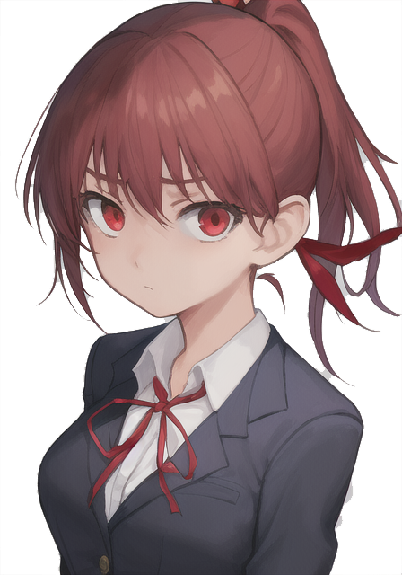

|
前回、背景を変更したので、今回は立ち絵を変更してみましょう。 まずは立ち絵に表示したい絵を用意して、Pictureの中に入れます。 |  |
|
minisina.txtに二文加えます。 右の文を前回の文章の後に入れます。 立ち絵は背景と違ってキャラナンバー、表情ナンバーという感じで分けられています。 |
fg,1,1 立ち絵を設定します |
|
CHARSEET.txtに今回追加した文章に対応する立ち絵を追加します。 背景の場合は３番目は1とかになるのですが、立ち絵の場合は3番目の部分が1,1のようになります。 立ち絵なので、キャラクターの番号と表情差分での違いになるので、こういう形にしています。 画像ですが、基本的には透過pngで、描いてない部分が透過されるように画像を用意してください。 最終的に本体で動かして、動くのを確認出来たら終了です |
CP,11,1,1,AKAGEDO,png |